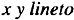

by Alan Parker
CRC Press, CRC Press LLC
ISBN: 0849371716 Pub Date: 08/01/93
|
|
Algorithms and Data Structures in C++
by Alan Parker CRC Press, CRC Press LLC ISBN: 0849371716 Pub Date: 08/01/93 |
| Previous | Table of Contents | Next |
and write a C++ program to calculate the series via the closed form solution and print out the first twenty terms of the series for

followed by
to actually draw the line. Test the output by sending the output to a PostScript printer.
| Previous | Table of Contents | Next |